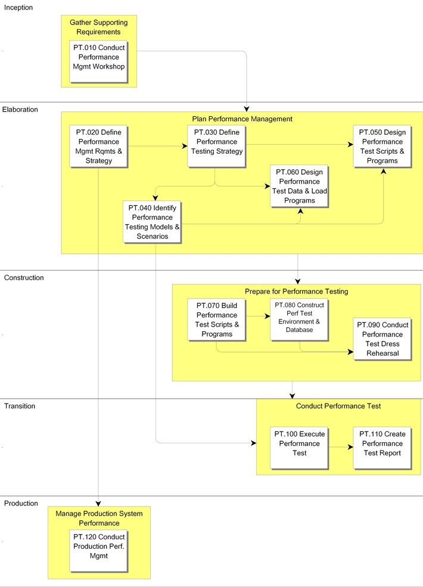

OUM |
Process Overview |
||
Method Navigation |
Current Page Navigation |
||
|
|
||||||||
The objective of the Performance Management process is to proactively define, construct, and execute an effective approach to managing performance throughout the project implementation lifecycle in order to validate that the performance of the system or system components is aligned with the user's requirements and expectations when the system is implemented. Performance Management is not limited to conducting a performance test or an isolated tuning exercise, although both those activities may be part of the overall Performance Management strategy.
It should be noted that where Performance Management process is going to be performed in a holistic manner (majority of tasks within process), a separate performance management project is typically performed versus attempting to perform all the tasks within the same project where component design, test, and build is occurring.
To succeed, Performance Management must be oriented around the user view of performance. Traditional approaches to Performance Management use a top-down approach that evaluates overall system health and then drills down into any issues apparent at a system level. DBAs and Performance tuners evaluate the wide variety of system statistics and try to find evidence of problems that should be remediated. In some cases where there is a system wide constraint, this approach can succeed, but if the performance "problem" is related to a failure of a particular transaction to meet its performance objective, considerable time can be spent without effectively addressing the actual problem the users are experiencing. When the problem is poor performance with important business transactions but a top-down approach is used, time may be spent on unrelated transactions or system wide configuration, resulting in no discernible improvement from a user perspective. Effective performance management must begin with identifying the key business transactions and associated performance expectations and requirements early in the Inception and Elaboration phases and implementing the appropriate standards, controls, monitoring checkpoints, testing and metrics to ensure that transactions meet the performance expectations as the project progresses through elaboration, construction, transition and production. Field experience has repeatedly shown that attempting to manage performance from a system perspective without a clear view of the user expectations does not produce the desired result.
Failure to begin the Performance Management process in the project's early phases or to identify the key business transactions and their performance requirements can lead to a significant amount of reactive, unplanned work in the later phases of Construction, Transition or after Production. In some cases, this approach has led to a lack of user acceptance and in the worst cases, project cancellation. Time spent developing a Performance Management strategy and establishing the appropriate controls and checkpoints to validate that performance has been sufficiently considered during the design, build and implementation will save valuable time spent in reactive tuning at the end of the project while raising user satisfaction. The Performance Management process should not end with the production implementation, but should continue after the system is implemented to monitor performance of the implemented system and to provide the appropriate corrective actions in the event performance begins to degrade.
If the project scope includes formal performance testing, the performance test objectives, scope and strategy will be defined in the Performance Testing Strategy (PT.030). Performance Testing uses a top down approach, and it can be used to either validate a model of the entire solution or focus on a particular component of a solution. Performance testing can establish the expected the solution or component under test and can be used to validate that the production performance will acceptable for the business or if changes are required to meet the performance objectives. Performance Testing should represent the final validation, not the first evaluation of performance. If Performance Testing is the only Performance Management technique used, there is considerable risk that:
The requirements that drive Performance Management also impact Technical Architecture (TA) and the two processes are closely related.
 This process overview is written from the perspective of a Full Method View, utilizing ALL of the activities and tasks in this process. Therefore, all of the following sections provide comprehensive information. If your project is utilizing a tailored approach (for example, Technology Full Lifecycle View, Application Implementation View, Middleware Architecture View), not everything in this overview may be appropriate for your project. Please keep this in mind, especially when reviewing the Key Work Products and Tasks and Work Products sections. You should use OUM as a guideline for performing all types of information technology projects, but keep in mind that every project is different and that you need to adjust project activities according to each situation. Do not hesitate to add, remove, or rearrange tasks, but be sure to reflect these changes in your estimates and risk management planning. You should also consider the depth to which you address and complete each task based on the characteristics of your particular project or project increment. See Oracle's Full Lifecycle Method for Deploying Oracle-Based Business Solutions for further information on the scalability and adaptability of OUM.
This process overview is written from the perspective of a Full Method View, utilizing ALL of the activities and tasks in this process. Therefore, all of the following sections provide comprehensive information. If your project is utilizing a tailored approach (for example, Technology Full Lifecycle View, Application Implementation View, Middleware Architecture View), not everything in this overview may be appropriate for your project. Please keep this in mind, especially when reviewing the Key Work Products and Tasks and Work Products sections. You should use OUM as a guideline for performing all types of information technology projects, but keep in mind that every project is different and that you need to adjust project activities according to each situation. Do not hesitate to add, remove, or rearrange tasks, but be sure to reflect these changes in your estimates and risk management planning. You should also consider the depth to which you address and complete each task based on the characteristics of your particular project or project increment. See Oracle's Full Lifecycle Method for Deploying Oracle-Based Business Solutions for further information on the scalability and adaptability of OUM.
This process flow for this process follows:

Depending on your project (e.g., large, complex, etc.), the project manager may designate a Performance Management team leader. In some projects the performance management effort is a "sub-project" to the overall software implementation effort. If the project manager designates a Performance Management team leader, they are responsible for leading the Performance Management process and reviewing the work products. The team leader plans, directs, and monitors the day-to-day work of the team. The team leader assigns work packages to the team members and makes sure they understand the requirements. The team leader is responsible for building team cohesion, motivating the teams, and providing assistance and encouragement to the team members. Each team leader performs the final quality control and quality assurance for the team by reviewing all work products. The team leader also signs off on team work completion and quality. Work that is not up to quality standards is returned. Team leaders review work products from other teams when these work products may impact aspects of the system. The team leader reports the team's progress to the project manager. Refer to Project Management in OUM for additional information on team leaders.
The Conduct Performance Management Workshop (PT.010) task is the first step in the Performance Management process. The Performance Management Workshop familiarizes the customer with the concepts of proactive Performance Management, the need to define performance requirements for business critical transactions, establishment of metrics and monitoring related to performance management, Service-Level Agreements (SLA) and the appropriate use of Performance Testing. The workshop also provides a mechanism to gather information on performance needs and expectations that should be used to develop the Performance Management Requirements and Strategy (PT.020 ).
In projects that delegate the bulk of responsibility for Performance Management and Performance Testing to the customer, a Performance Management workshop must be conducted to make the customer aware of the expectations and requirements associated with their responsibility as well as to share best practice approaches and experiences of other customers.
After the Performance Management Workshop, the Performance Management process continues with the definition of the Performance Management Requirements and Strategy (PT.020 ). The PT.020 documents the business critical transactions and their performance requirements, what metrics will be established and reported, what monitoring or instrumentation will be implemented and what control processes will be put in place. If the project will conduct formal performance testing, a Performance Testing Strategy (PT.030) should be created which defines the scope and objectives of Performance Testing for the project and outlines the strategy that will be used to execute the Performance Test. The specific transaction scenarios and models are defined in the Performance Test Transaction Models and Scenarios (PT.040), design of test scripts and programs is documented in the Performance Test Scripts and Programs Design (PT.050), and any test data or load programs required are documented in the Performance Test Data and Load Programs Design (PT.060).
The Performance Management team defines the scope of testing and relates it to point-in-time snapshots of the transactions expected in the real production system. Technical analysts create or set up transaction programs to simulate system processing within the scope of the test and populate a volume test database against which to execute the transactions. Once the system and database administrators have created the test environment, the project team executes the test and the final results are documented.
The general requirements for Performance Management are similar for all projects, although the details may vary considerably. Performance requirements should be tied to the user's expectations and the most important transactions should receive priority. Most projects have a subset of business transactions that are considered more critical than others, either because they have high execution rates, or because there is an impact to business processing if the transactions fail to complete within a particular window of time.
A project implementing an application suite with limited customization or extensions, may require a fairly simple performance management strategy that identifies and prioritizes the business critical transactions, establishes the techniques and metrics that will be used to monitoring actual performance and defines the process to identify, track and resolve problems. On the opposite end of the spectrum, a new software engineering effort will require the above activities and should implement additional measures such as code reviews for performance, proactive scanning for sub optimal components, detailed performance testing of individual components and automated performance testing in order to validate that the solution meets the performance objectives. In many cases the system and database level statistics may not provide a complete view of performance at a user transaction level. Instrumentation at the technical level or at the application level may be necessary to collect the appropriate information and allow meaningful reporting of performance metrics.
The need for Performance Management does not end after the project has implemented. Metrics and monitoring established to measure system performance are critical post implementation processes in order to validate that system performance remains within acceptable parameters. Changes to workload, user volumes or other factors can introduce performance issues. Failure to proactively monitor and measure production performance may lead to situations where although performance is degrading over time, nothing is noticed until there is a highly visible production "crisis". Customers who invest in automated testing tools may be able to take advantage of that investment to validate changes planned in the production environment.
| Tool | Guidance | Application/Note |
|---|---|---|
Oracle Application Test Suite (OATS) Testing and Quality Management Tools |
This process has supplemental guidance for using using Oracle Application Test Suite (OATS) Testing and Quality Management Tools. Use the following to access the process-specific supplemental guidance. To access all Oracle Application Test Suite (OATS) Testing and Quality Management Tools supplemental information, use the OUM Testing and Quality Management Tools Supplemental Guide. |
Oracle Application Test Suite (OATS) Testing and Quality Management Tools is a complementary Oracle suite of tools that is used to manage software testing for a project as well as to develop test automation and performance testing, when used together these tools can be used to maximize system performance and ensure the quality and success of a project. |
The tasks and work products for this process are as follows:
| ID | Task | Work Product |
|---|---|---|
Inception Phase |
||
PT.010 |
Conduct Performance Management Workshop |
Performance Management Workshop Results |
Elaboration Phase |
||
PT.020 |
Define Performance Management Requirements and Strategy |
Performance Management Requirements and Strategy |
PT.030 |
Define Performance Testing Strategy | Performance Testing Strategy |
PT.040 |
Identify Performance Testing Models and Scenarios |
Performance Testing Models and Scenarios |
PT.050 |
Design Performance Test Scripts and Programs |
Performance Test Scripts and Programs Design |
PT.060 |
Design Performance Test Data and Load Programs |
Performance Test Data and Load Programs Design |
Construction Phase |
||
PT.070 |
Build Performance Test Scripts and Programs |
Performance Test Scripts and Programs |
PT.080 |
Construct Performance Test Environment and Database |
Performance Test Environment and Database |
PT.090 |
Conduct Performance Test Dress Rehearsal | Validated Performance Test Environment and Environment |
Transition Phase |
||
PT.100 |
Execute Performance Test | Performance Test Results |
PT.110 |
Create Performance Test Report | Performance Test Report |
Production Phase |
||
PT.120 |
Conduct Production Performance Management |
Managed Production Environment |
The objectives of Performance Management are:
Refer to Key Work Products for a complete list of key work products in OUM.
The following roles are required to perform the tasks within this process:
| Role ID | Name | Responsibility |
|---|---|---|
Implementing Organization |
||
| BA | Business Analyst | Assist in identification of key business transactions and performance expectations. |
| DBA | Database Administrator | Participate in the preparation of the Information Architecture for the environment to support performance testing. Provide support for the execution of the performance testing dress rehearsal. Provide support for the data base environment used in Performance Testing. Monitor database and application, resolve performance issues, report DB and application metrics. |
| DV | Developer | Participate in the process of performance requirement analysis. Define specific performance requirements for the application. |
| NE | Network Engineer | Monitor network activity during the test. |
| SAD | System Administrator | Install application software. Provide support for the performance testing. Provide support for Performance Management activities such as running standard application reports on transaction performance, applying and testing patches and upgrades. |
| SAN | System Analyst | Provide input on projected volumes and scenarios, review and approve the development of the Performance Testing Models and Scenarios. Provide support for the test scenarios used in Performance Testing. |
| SA | System Architect | Conduct the interviews, prepare workshop presentation and recommendations, facilitate workshop session. You may wish to include an additional System Architect that specializes in system integration to participate in the process of performance requirement analysis. Familiarize the customer with the goals and objectives of the workshop, assist in gathering performance requirements. Provide information on technical architecture design and performance implications. Develop the Performance Management Requirements and Strategy. Develop Performance Testing Strategy. Develop the Performance Testing Models and Scenarios. Oversee, review and approve the design of of the Performance Test Scripts and Programs. Design test components with regard to the technical architecture of the application. Review and approve the Performance Test Data and Load Programs Design. Oversee, review and approve the Performance Test Transaction Programs. Code the most complex components. Participate in the preparation of the technical architecture environment to support performance testing. Review and approve the Performance Test Environment and Database. Supervise and oversee the Performance Test Dress Rehearsal. Oversee the execution of the performance test. Assist tester in the execution of the performance test by addressing issues and question related to the technical architecture. Review and approve Performance Testing Results. |
| SA (IA) | System Architect (Information Architect) | Assist test team in designing test components with regard to the data architecture of the application. Preferably, this should be done by a system architect that specializes in Information Architecture. |
| TE | Tester | Design the Performance Test Scripts and Programs. Design the performance test data and load programs. Create Performance Test Transaction Programs. Executes performance test. Execute the performance test. Compile test results and prepare report. |
Customer (User) |
||
| KEY | Ambassador User | Identify key business transactions and performance expectations. Defines business performance objectives and requirements. Review and approve the Performance Testing Strategy. Assist test team with identification of test data requirements. |
| CDA | Customer Data Administrator | Identify existing performance management process, procedures, standards, SLAs. Participate in the process of requirement analysis. |
| CPM | Customer Project Manager | Coordinate the interview schedule for the workshop, assist in gathering performance requirements. |
| CSM | Customer Staff Member | Participate in the process of performance requirement analysis. |
| OS | IS Operations Staff | Identify existing Performance Management process, procedures, standards, SLAs. Participate in the process of performance requirement analysis. Set up hardware and system software configuration. Set up hardware and system software configuration. Monitor hardware and system software configuration, resolve performance issues, report system metrics. |
| SS | IS Support Staff | Participate in the process of performance requirement analysis. Provide support for the creation of the Performance Testing environment. Provide support for the creation of the Performance Testing Environment. Log performance issues, track resolution and notify users. |
The critical success factors of this process are:

Copyright © 2006, 2016, Oracle and/or its affiliates. All rights reserved.